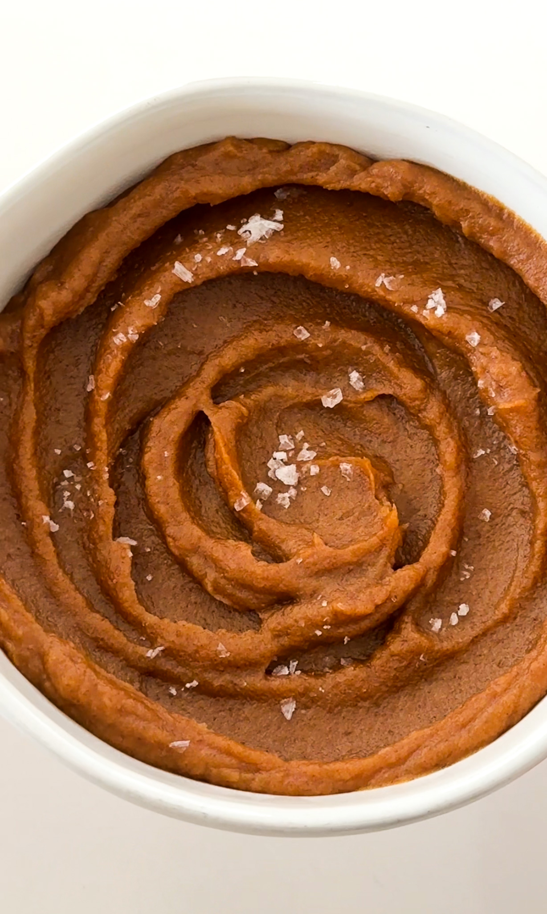

Dessert
Date Caramel
PREP TIME: 10 MINUTES
TOTAL TIME: 30 MINUTES
YEILDS: 6 TO 8
Whip up a batch of heavenly date caramel in under 30 minutes with
this easy recipe, ideal for making the most of those extra dates
in your pantry. Featuring ONLY 3 ingredients, like Medjool dates
and a hint of vanilla, it's a fantastic way to elevate your desserts
or enjoy as a decadent dip. Quick to prepare and dare I say better
than regular caramel, this date caramel will soon become a favorite
go-to for all your sweet cravings.
Jump to recipe
Date Caramel
Dessert
Date Caramel
PREP TIME: 10 MINUTES
TOTAL TIME: 30 MINUTES
YEILDS: 6 TO 8
Whip up a batch of heavenly date caramel in under 30 minutes with
this easy recipe, ideal for making the most of those extra dates
in your pantry. Featuring ONLY 3 ingredients, like Medjool dates
and a hint of vanilla, it's a fantastic way to elevate your desserts
or enjoy as a decadent dip. Quick to prepare and dare I say better
than regular caramel, this date caramel will soon become a favorite
go-to for all your sweet cravings.
INGREDIENTS
- 20 pitted Medjool dates
- 2/3 to 3/4 cup hot whole milk
- 1 teaspoon vanilla extract
- pinch of sea salt, optional
INSTRUCTIONS
-
Soak the Dates: Place the pitted dates in a bowl and
cover them with hot water. Let them soak for about 15-20
minutes. This will soften them, making it easier to blend them
into a smooth caramel
-
Drain the Dates: After soaking, drain the dates of the
water.
-
Blend: Transfer the soaked dates to a blender or food
processor. Add the milk, vanilla extract, and a pinch of salt
if desired. Start blending on low speed and gradually increase
to high. Blend until the dates form a smooth and creamy paste.
You may need to scrape down the sides of the blender or food
processor a few times to ensure everything gets evenly blended.
-
Adjust Consistency: If the caramel is too thick, add a
little bit more milk or water, a tablespoon at a time, and
continue blending until you reach your desired consistency.
If you prefer a thinner caramel, add more liquid; if you prefer
it thicker, use less liquid.
-
Taste and Adjust: Once you've achieved the desired
consistency, taste the caramel and adjust the sweetness and
saltiness as needed. You can add more dates for sweetness or
more salt for flavor balance.
-
Serve or Store: Your date caramel is now ready to use!
You can use it as a topping for desserts like ice cream,
pancakes, or oatmeal, or as a dip for fruit slices. Store any
leftovers in an airtight container in the refrigerator for up
to 1 to 2 weeks.